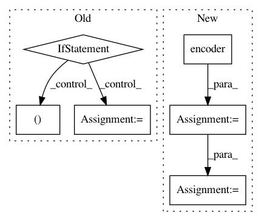

8030eeca74b6634f2a60168516573912aaa9cd65,model/modeling.py,BertForSequenceClassification,forward,#BertForSequenceClassification#Any#Any#Any#Any#,891
Before Change
pooled_output = self.dropout(pooled_output)
logits = self.classifier(pooled_output)
if labels is not None:
loss_fct = CrossEntropyLoss()
loss = loss_fct(logits, labels)
return loss, logits
else:
return logits
class BertForQuestionAnswering(PreTrainedBertModel):
BERT model for Question Answering (span extraction).
This module is composed of the BERT model with a linear layer on top of
the sequence output that computes start_logits and end_logits
After Change
class BertAttention(nn.Module):
def __init__(self, config):
super(BertAttention, self).__init__()
self.self = BertSelfAttention(config)
self.output = BertSelfOutput(config)
def forward(self, input_tensor, attention_mask):
self_output = self.self(input_tensor, attention_mask)
attention_output = self.output(self_output, input_tensor)
return attention_output
In pattern: SUPERPATTERN
Frequency: 3
Non-data size: 6
Instances
Project Name: NVIDIA/sentiment-discovery
Commit Name: 8030eeca74b6634f2a60168516573912aaa9cd65
Time: 2018-11-20
Author: raulp@nvidia.com
File Name: model/modeling.py
Class Name: BertForSequenceClassification
Method Name: forward
Project Name: HyperGAN/HyperGAN
Commit Name: a178a47269013e94c4756f94a2c9a0c373e04a18
Time: 2021-01-02
Author: mikkel@255bits.com
File Name: examples/next-frame.py
Class Name: VideoFrameSampler
Method Name: _sample
Project Name: NVIDIA/sentiment-discovery
Commit Name: 65c9a4857e41dcde4f5dae8a77e6cdf03953646a
Time: 2018-03-19
Author: raulp@dbcluster.nvidia.com
File Name: model/model.py
Class Name: RNNFeaturizer
Method Name: forward